Run Together
Background
There are more than 17 million people with visual impairment in China. However, the health situation of this group is worrisome . Statistics from the China Disabled Persons’ Federation show that the average life expectancy of visually impaired people in China is 56 years while the total life expectancy of China is 77 years.
Research indicates that people with vision disability are generally not as healthy as sighted people. (Rector, Bennett, Kientz, 2017) One of the major conditions that may contribute to this situation is that visually impaired adults are more likely to be obese and have a greater likelihood of depression because they “do not complete enough physical activity to maintain an adequate fitness level.” (McDonnall, 2007)
I chose this as the topic of my course project for SI 582, Introduction to Interaction Design. I aimed to design a product that could empower the visually impaired people in China by increasing their access to frequent exercise with accessibility taken into consideration from the very beginning.
Exploratory Research
Apart from learning more general facts about visually impaired people in China, I came up with several questions about their exercise status that could provide guidance for the research.
- What is their general frequency of exercise?
- What are the most popular types of exercise among the group?
- What are the barriers that prevent them from exercising?
- What would motivate them to exercise?
- What is currently done to improve the situation?
Literature Review:
10+ relevant reports, articles as well as 1 documentary.
Interviews:
After learning more about the group, I reached out to 2 visually impaired people in China that could be representative of my population of interest and conducted interviews through video chat. One of the interviewees in his 40s was an independent in-home massage therapist living in a Tier 4 city with his wife. The other interviewee was also a massage therapist and she was living in a dormitory with her co-workers in Shanghai.
Findings from Literature Review:
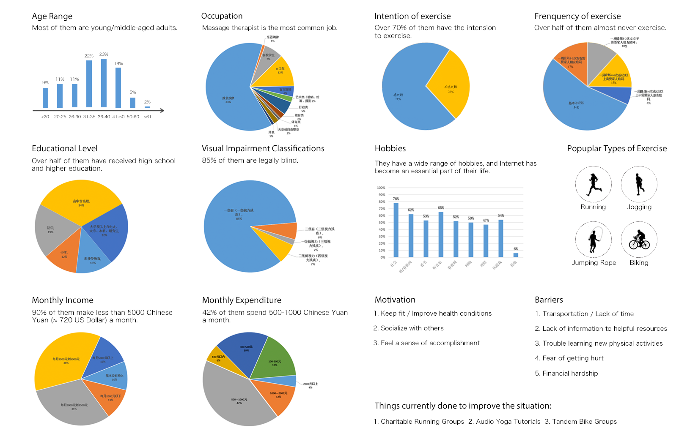 Findings from Interviews:
- Their spare time varies from day to day.
From the younger female interviewee, her work schedule starts at 9am and will last about 8 hours. Often times they need to extend working hours if there are too many customers. In peak periods, they couldn't leave until 11pm. - Unevenly distributed and not fully utilized resources.
From the older male interviewee who lives in a Tier 4 city, there are only few activities held by certain organizations for visually impaired people. As for the younger female interviewee, although she has heard of such organizations and activities for many times, she couldn’t find time to go and the activities are always held somewhere far from her place. It would still be next to impossible for her to participate. - Hoping to step out more and get into the public eye.
They are upset that currently the relevant policies and facilities in China could not provide adequate social security for the group. The older male interviewee thinks only by going out more could public awareness be raised and more actions be taken to ensure their basic needs and benefits.
Design Principles
Based on the design challenges and opportunities found in the exploratory research, I came up with 4 design principles.
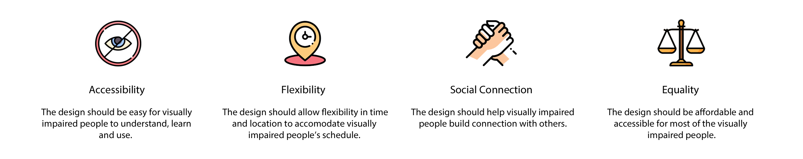Ideation and evaluation
I brainstormed for several solutions and then sketched out the scenarios to help visually predict and explore user's experience with the product. After evaluation, I decided to choose the third idea, which is a platform for visually impaired people to find sighted runners to guide them through running whenever they could find time to exercise, because it best met with the design principles.
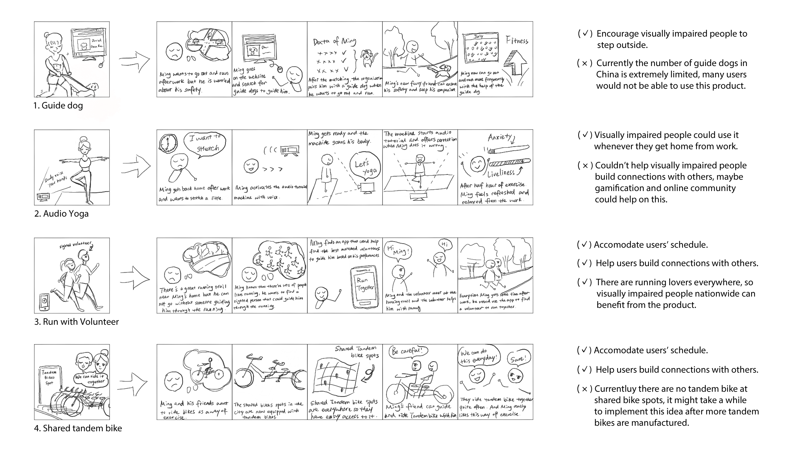Concept Refinement
Then I asked two more questions to further develop the concept:
- What kind of platform should this product be based on?
The ideal platform for running activities would be a mobile phone because runners can carry it while running to collect relevant data. Furthermore, based on research, more than 90% of visually impaired people in China use smartphones and more than 60% of them are using Android smartphones with screen readers like TalkBack, so this product should be an Android based mobile app with the integration of accessibility guidelines through TalkBack. 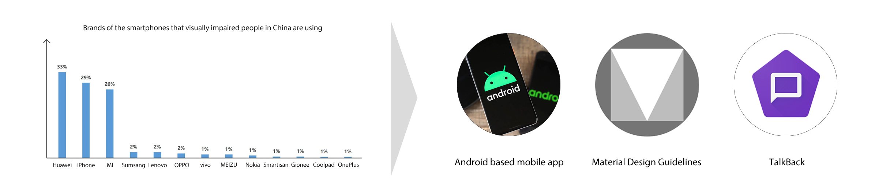 - How might we ensure visually impaired people’s mental security while running?
Visually impaired people are sensitive, and when they are guided by a volunteer they do not know personally, they might feel intimidated and insecure. - Find the best matched volunteer.
- Visually impaired people should be matched with volunteers with similar running habits like pace, distance, running routes, time and location, ect.
- Visually imapired people should know how experienced the volunteer is and be able to choose a more experienced volunteer if they feel necessary.
- Build connections before running.
- Visually impaired people and volunteers are encouraged to chat with each other before the running take place to understand each other better, see if there’s any special needs or just say hi.
Final Concept
Accessible mobile application for visually impaired people in China that could match them with sighted volunteers when they want to run for exercise, with the integration of accessibility guidelines for Android through TalkBack.
Pro-persona and Anti-persona
I created a pro-persona and an anti-persona based on the research data and takeaways to better understand the target users and guide me through the following design process.
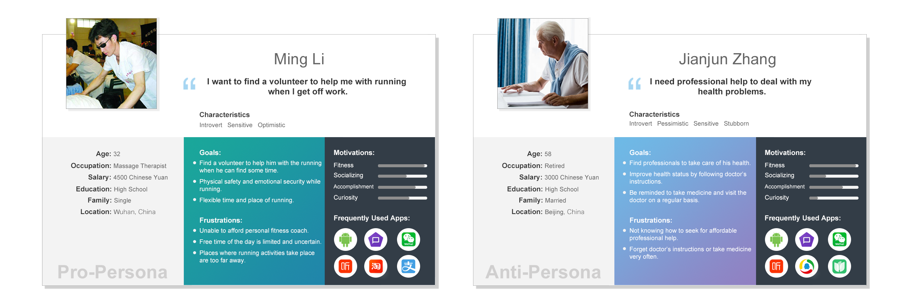Looking for Inspiration
I took a look at several apps for visually impaired users in the market to get a general idea of what mobile applications for them should be like .
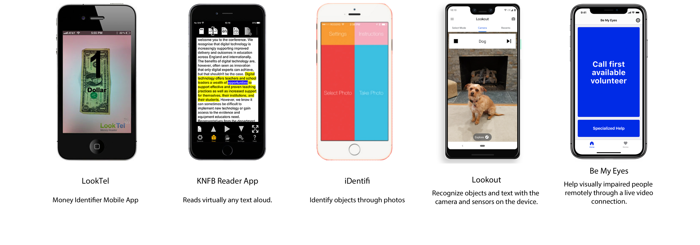 Key Takeaways:
- Interfaces should be as simple as possible.
- Different approaches to facilitate the navigation, such as tabs and block layout.
- High color contrast and large touch targets.
Initial Sketches
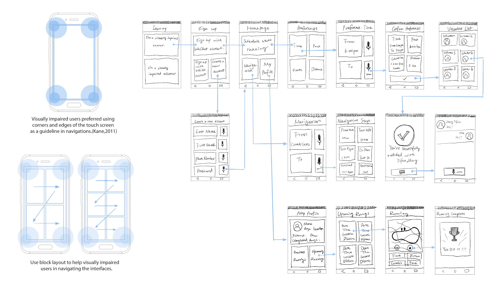Design Changes
With the initial sketches, I reached out again to the two interviewees from previous interviews to validate my concepts. Meanwhile, I conducted further literature review as well as paper prototyping with peers. To best simulate the situation, I asked users to close their eyes during the prototyping and I would read out the content while their fingers moving on the paper.This might not be the most rigorous way to conduct user-testing for an accessible product, but I still gained some valuable insights to help me come up with a better design.
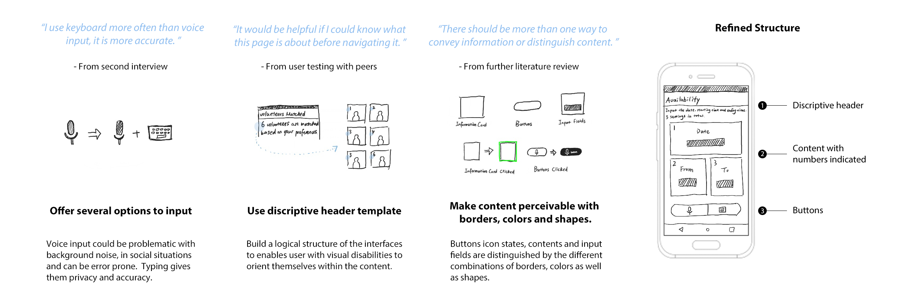Design Decisions for Hi-fi Prototype
- Color Contrast
Different colors are used for different features of the app because background colors can serve as a hint for users with low vision. I chose green as the color of border when an object is selected, and another 4 colors with Material Design Color Tool which appear distinct to people with colorblindness and could also provide enough color contrast with black text on it to ensure the readability.
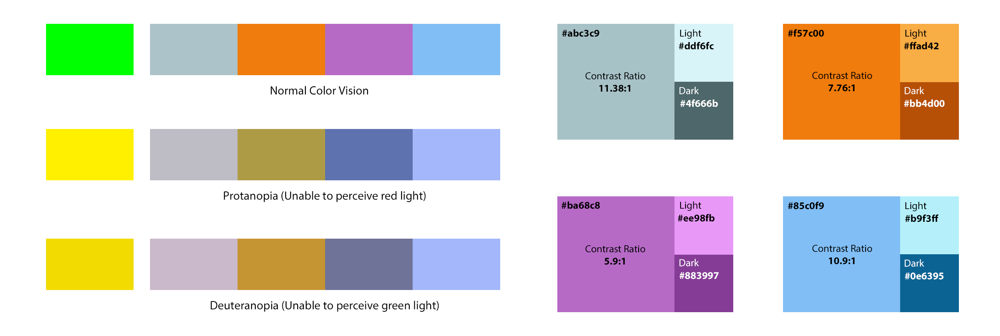
In addition, I used different shades of the hues to provide extra meanings. When the block is clicked, the color will turn into a brighter shade with green border, and the input fields are marked with a darker shade with white border. By doing so, user attention will be attracted to certain areas and the message of the interfaces can also be more perceivable and easily carried across to partially blind users.
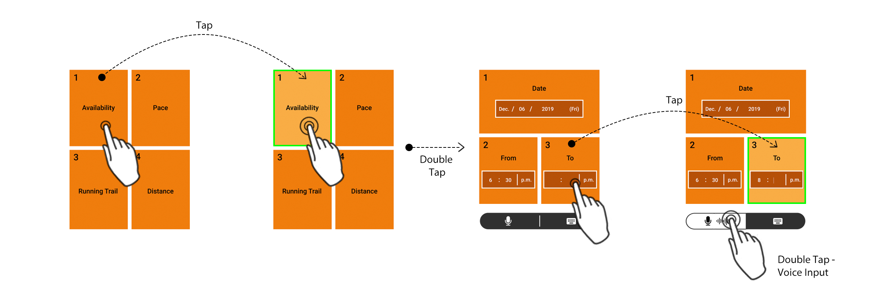
- Touch Targets
From Material Design Guidelines for accessibility, touch targets should be at least 48dp x 48dp and separated by 8dp of space or more.
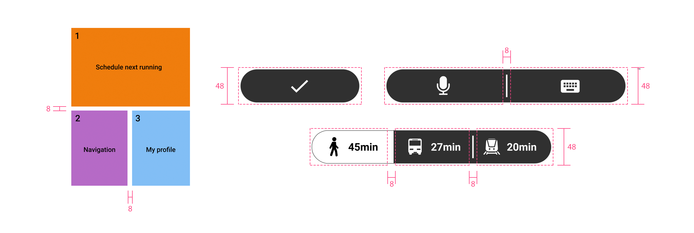
Final Design
Accessible mobile app for visually impaired people in China that could pair them with sighted volunteers when they want to run for exercise.
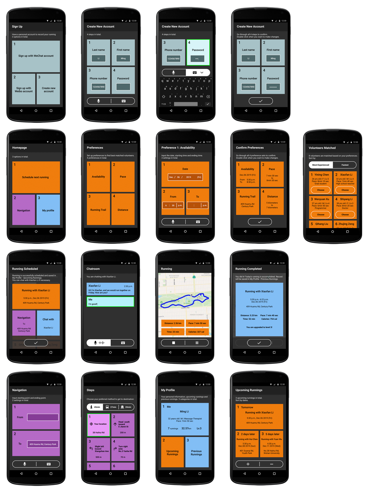Interactive Prototype
Reflection and Impact
A research paper pointed out that in most cases, designing for accessibility is still an afterthought and the importance of designing for accessibility is underestimated. I couldn't agree more. As a user experience designer, I challenged myself to explore how to make this product accessible as much as possible. The process was not easy but fortunately I have made progress and gained lots of valuable insights.
Although my project is based in China and focused on Chinese visually impaired people, I would like to expand the context to the entire world. From WHO, the estimated number of people visually impaired in the world is 285 million, which is an extremely large group. The touchscreen interface is an increasingly common feature nowadays, and more visually imparied people rely on mobile devices in their daily life. However, for fully sighted users, the act of correctly touching the desired button on a touchscreen-based device is taken for granted while visually impaired users come across challenges in even the simplest operations on touchscreens. Therefore, Interaction designers should consider what to implement in future touchscreen interfaces to strengthen accessibility.